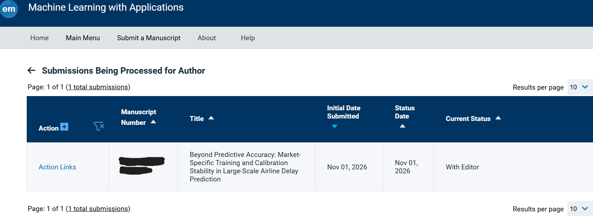

Beyond Predictive Accuracy: Market-Specific Training and Calibration Stability in Large-Scale Airline Delay Prediction
This research investigates the effects of historical market representation on airline delay prediction, with particular attention to out-of-time generalization and probability calibration.

Manuscript submitted to Machine Learning with Applications, November 2026. Currently with editor🙏.